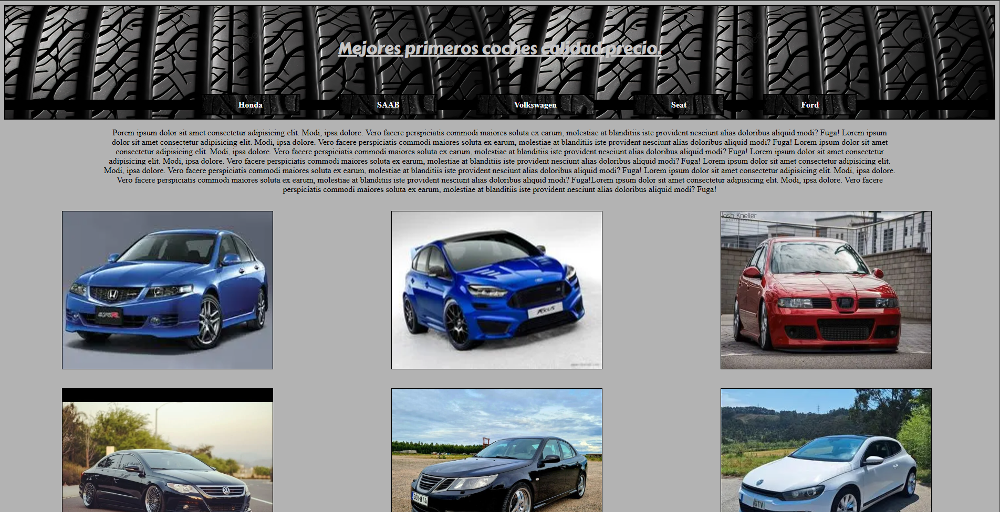
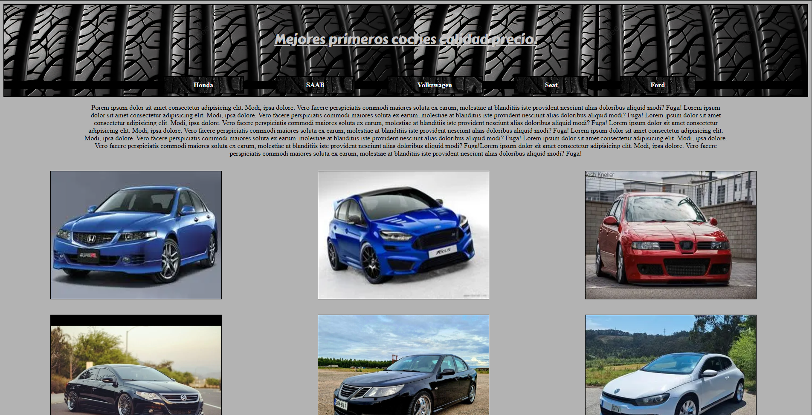
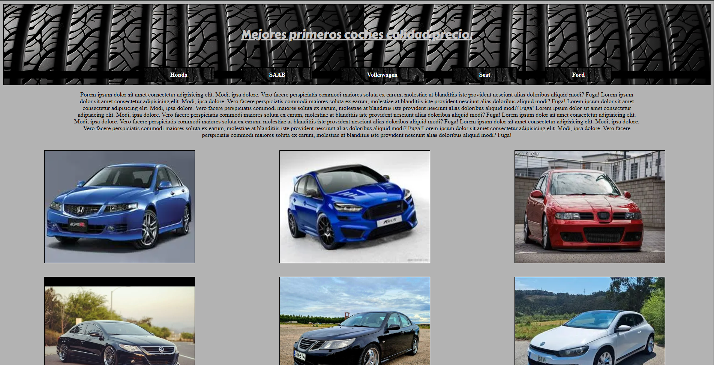

Volver
¿Quienes somos?
RC Celta
Atletico de Madrid

Mejores primeros coches calidad precio
 Atletico de Madrid

Mejores primeros coches calidad precio
Atletico de Madrid

Mejores primeros coches calidad precio